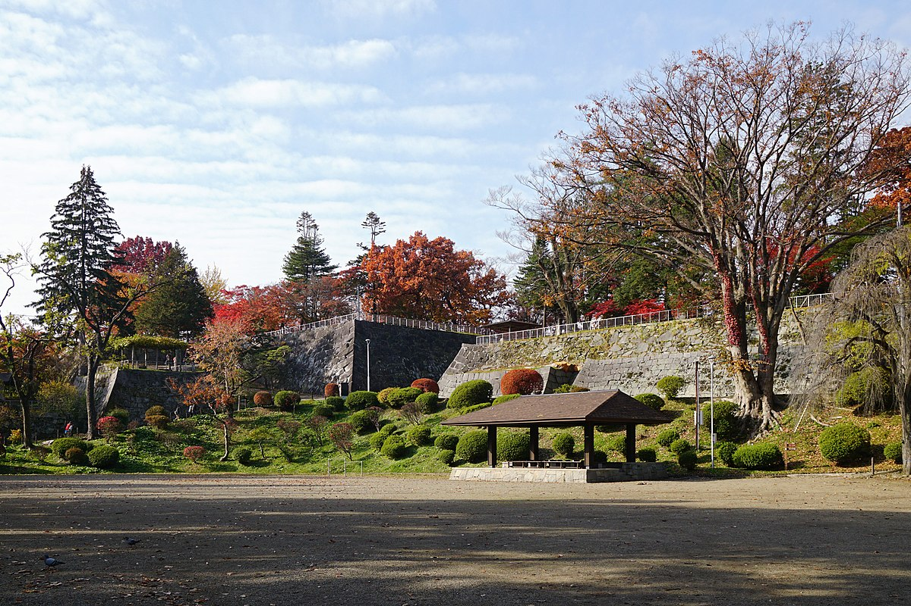
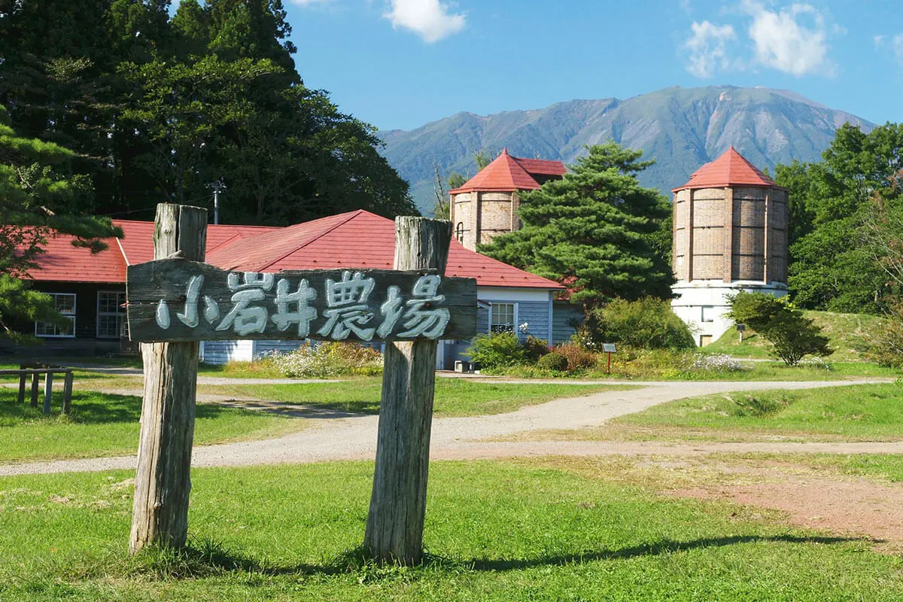
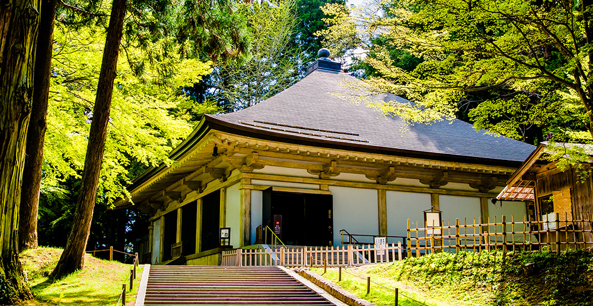
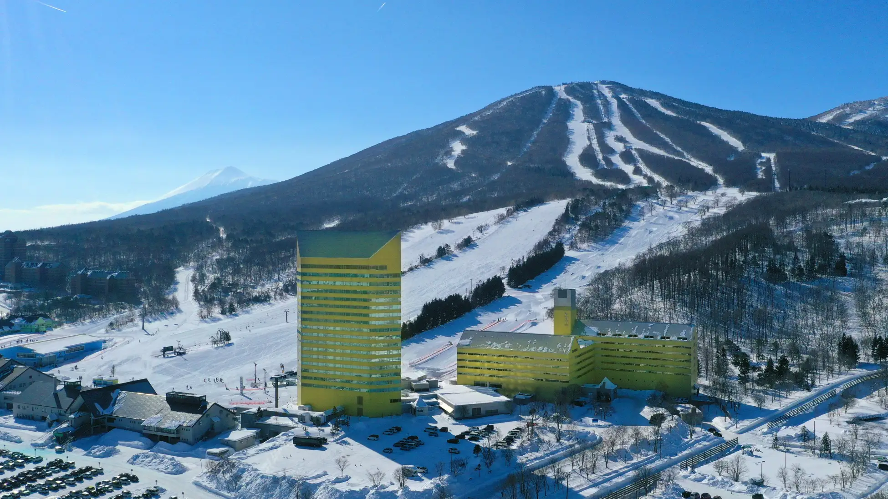

このサイトは岩手の魅力を発信しています

岩手の観光スポット
盛岡城は、三戸から不来方(こずかた)の地に居城の移転を決定した南部信直(なんぶのぶなお：盛岡藩初代藩主）が、慶長2（1597）年に嫡子利直(としなお：2代藩主）を総奉行(そうぶぎょう)として築城を始めたと伝えられています。 城の縄張りは豊臣家重臣の浅野長政の助言によるものといわれ、北上川と中津川の合流点に突き出した丘陵上に本丸・二ノ丸・三ノ丸・淡路丸(あわじまる)など曲輪（くるわ）を配し、それぞれに雄大な石垣を構築して内曲輪(うちくるわ)＝御城内(ごじょうない)としています。 さらに、内曲輪の北側は起伏の激しかった現在の内丸地域を平坦にして堀と土塁で囲み、南部氏一族や藩の重臣たちの屋敷を配置して外曲輪(そとくるわ)としました。また、外曲輪の北側と東側の中津川対岸の城下も堀と土塁で囲み、武士や町人たちの屋敷街である遠曲輪(とおくるわ)＝総構(そうがまえ)が配置されています。 築城工事は、北上川や中津川の洪水にみまわれながらも続けられ、築城開始から36年後、おおよその完成をみた寛永10（1633）年に南部重直(しげなお：3代藩主)が入城して以降、藩政時代を通じて盛岡南部氏の居城となりました。 盛岡城は、明治の廃藩置県の後明治5（1872）年に陸軍省所管となり、明治7（1874）年には内曲輪（御城内）の建物の大半が取り壊され、城内は荒廃しました。 その後、明治39（1906）年に近代公園の先駆者である長岡安平(ながおかやすへい)の設計により岩手公園として整備され、市民の憩いの場として親しまれています。 平成18（2006）年には開園100周年を記念し、「盛岡城跡公園」と愛称をつけました。 また、「日本の名城100選」や「日本の歴史公園100選」にも選ばれています。
1891年創業の民間総合農場。創業者である「小野義眞」（日本鉄道会社副社長）、「岩﨑彌之助」（三菱社社長）、「井上勝」（鉄道庁長官）３氏の頭文字から「小岩井」農場と命名された。 総面積は約3,000ヘクタール(東京ドームの約640倍)。「小岩井」ブランドの乳製品の基となる酪農事業、「小岩井農場育ち」ブランドの乳製品の製造と販売、2,000ヘクタールを占める森での山林事業、首都圏や復興祈念公園他での環境緑化事業、生産的営みや牧歌的風景を活かして憩いの場を提供する観光事業などを展開している。 『環境保全、持続型・循環型』の事業運営を目指し、『安全、安心、素性明らかプラス質の高い』農産物・製品・サービスを提供している。
中尊寺は、平泉の中心部北側の関山丘陵に位置し、奥州藤原氏初代清衡が、日本の北方領域における政治・行政上の拠点として平泉を造営するのに当たり、12世紀初頭から四半世紀をかけて、現世における仏国土（浄土）を表すその精神的な中核の寺院として最初に造営した寺院です。 鎌倉時代の歴史書『吾妻鏡』には、12世紀末期の中尊寺には、40にも及ぶ堂宇と300にものぼる禅坊（僧侶の住居）が存在したと記されています。 1337年（延元２年）の火災により、金色堂、その覆堂、経蔵の一部を除くほとんどの堂宇は焼失しましたが、近世には、仙台藩主伊達氏の庇護の下、現在に残る他の建造物は保護され、月見坂などの参道が整備されました。
安比高原スキー場（あっぴこうげんスキーじょう, APPI）は、岩手県八幡平市安比高原にあるスキー場。運営会社は株式会社岩手ホテルアンドリゾート。例年12月上旬から5月上旬まで滑走が可能。シンボルは、4つの三角形で四季を表したマーク。 日本有数の規模を誇り、山形蔵王温泉スキー場と共に東北を代表するスキー場である。ゲレンデは標高1305mの前森山と1328mの西森山に広がる。 ナイター設備あり。スキー場のほかに安比高原ゴルフクラブや安比高原牧場などもあり、滞在型のオールシーズンリゾートである。 開発時には亀倉雄策がアートディレクターを務め、スキー場で目に入るすべてのものは亀倉がデザインした。